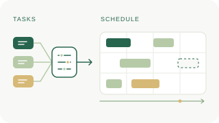
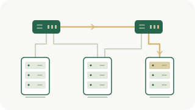

Online Algorithms
Scheduling and caching with provable performance guarantees.
在线算法Algorithms · Networks · Systems
Associate Professor
School of Computer Science and Information Engineering
Hefei University of Technology
Designing online algorithms with provable performance guarantees for practical networking systems.
Room 1604, Kejiao Building A
Feicuihu Campus, Hefei, China
01 / Introduction
I received my Ph.D. from the University of Science and Technology of China (USTC) in 2023, supervised by Prof. Xiang-Yang Li and Prof. Haisheng Tan. I am also a Humboldt Research Fellow, awarded the fellowship in 2023 with Prof. Xiaoming Fu as my host.
My research focuses on online problems in mobile edge computing and data center networks, including flow scheduling, job scheduling, and file caching. I develop online solutions with performance guarantees for practical networking problems. My work has appeared in IEEE/ACM ToN, IEEE INFOCOM, ACM MobiHoc, and IEEE ICDCS. I also serve as a reviewer for IEEE TMC.
02 / Research interests

Scheduling and caching with provable performance guarantees.
在线算法Resource allocation and efficient intelligence at the network edge.
边缘计算与智能
Flow scheduling and network optimization for distributed systems.
数据中心网络03 / Funded research
青年科学基金项目（C类）
国有企业委托 · 技术开发
04 / Research output
* Corresponding author · † Co-corresponding author
22 publications
IEEE International Conference on Computer Communications (IEEE INFOCOM) 2026. CCF-A
IEEE Transactions on Computer-Aided Design of Integrated Circuits and Systems (IEEE TCAD) 2025. CCF-A
ACM Transactions on Architecture and Code Optimization (ACM TACO) 2025. CCF-A
IEEE Transactions on Parallel and Distributed Systems (IEEE TPDS) 2025. CCF-A
Physical Review A, 2025. SCI 2区
计算机研究与发展, 2025. CCF-A 中文
IEEE Transactions on Networking (IEEE ToN) 2025. CCF-A
IEEE Transactions on Computer-Aided Design of Integrated Circuits and Systems (IEEE TCAD) 2024. CCF-A
计算机研究与发展, 2024. CCF-A 中文
IEEE Transactions on Parallel and Distributed Systems (IEEE TPDS) 2024. CCF-A
IEEE International Conference on Data Engineering (IEEE ICDE) 2024. CCF-A
IEEE/ACM International Symposium on Code Generation and Optimization (IEEE/ACM CGO) 2024. CCF-B
IEEE/ACM Transactions on Networking (IEEE/ACM ToN) 2023. CCF-A
IEEE/ACM International Symposium on Quality of Service (IEEE/ACM IWQoS) 2023. CCF-B Best Paper Award Candidate
IEEE International Conference on Computer Communications (IEEE INFOCOM) 2023. CCF-A
IEEE International Conference on Computer Communications (IEEE INFOCOM) 2022. CCF-A
The International Conference on Computational Data and Social Networks (CSoNet) 2022. Invited Paper
International Conference on Wireless Algorithms, Systems, and Applications (WASA) 2022. CCF-C
IEEE/ACM Transactions on Networking (IEEE/ACM ToN) 2021. CCF-A
ACM International Symposium on Theory, Algorithmic Foundations, and Protocol Design for Mobile Networks and Mobile Computing (ACM MobiHoc) 2020. CCF-B
IEEE International Conference on Distributed Computing Systems (IEEE ICDCS) 2019. CCF-B
IEEE International Conference on Communications (IEEE ICC) 2018. CCF-C
Try another keyword or a different publication type.
05 / Recognition
Humboldt Research Fellowship (洪堡学者, Host Professor: Prof. Xiaoming Fu)
CAS President Award, Excellence Prize (中科院院长奖优秀奖)
National Scholarship, Ph.D. Student (国家奖学金, Top 3% in School of Computer Science and Technology)
National Scholarship, Ph.D. Student (国家奖学金, Top 3% in School of Computer Science and Technology)
Graduated with Talent Program in Computer and Information Science and Technology (中国科学技术大学计算机英才班荣誉毕业)
National Scholarship, Undergraduate (国家奖学金, Top 3% in School of Computer Science and Technology)
National Olympiad in Informatics in Provinces, First Prize (NOIP, 一等奖)
National Olympiad in Informatics, Bronze Medal (NOI, 三等奖)
National Olympiad in Informatics in Provinces, First Prize (NOIP, 一等奖)